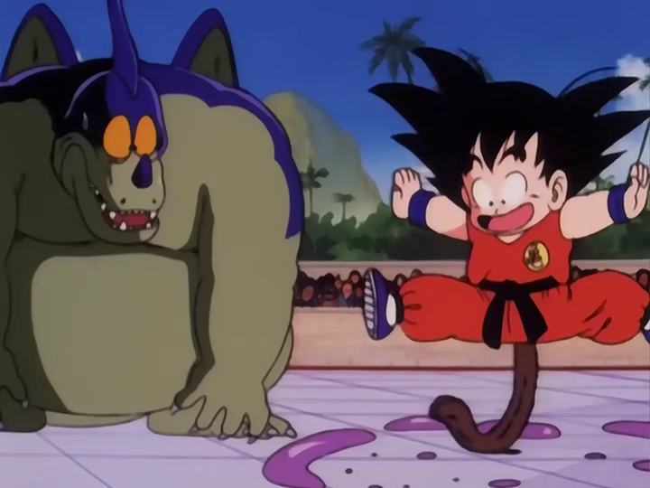

About Son Goku
Son Kogu is a wierd Alien and he is very powerfull , he need to keep his tail or the can lose his powers to save the world
Goku's caracteristics
- goku is weird
- goku has no interpersonal space awarness
- He has a very kind heart
Goku's friends
Goku has many trusty friends: